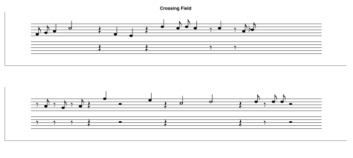
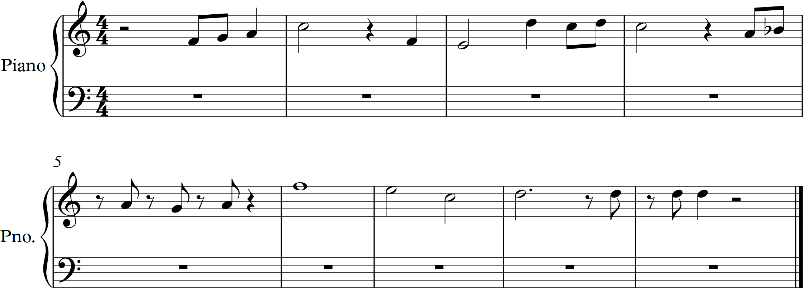

The audio processing algorithm was first tested in isolation, with frequency samples taken at regular intervals. A range of different instruments were tested, including piano, flute, piccolo, trumpet, trombone, violin, and voice. The algorithm can interpret woodwind and piano notes with a high degree of accuracy, but near the lower range of singing and brass instruments the consistency drops considerably.
To test our filtering and frequency selection algorithm, we visualized our recordings as discretized pitch over time. The six plots to the right are plotted in terms of half-steps above A4, so we could read them essentially as sheet music while testing our program.
Next, we tested whether the beat recognition lined up with the audio file. Because we were collecting the audio and accelerometer data separately, we had the algorithm line up the first tap with the first note played. Each additional upward spike in the vertical acceleration was recorded as a tap and plotted against the audio data, and we saw very strong agreement between them.
Finally, we integrated the beat recognition and audio processing together, to produce actual output. One of the cleaner results is shown below, from the song "Crossing Field" played on piano.

This trial was rather successful, and very closely resembles the song's actual transcription, shown below.

While OverTone is fully functional in the right conditions, several improvements remain to be made. The recognition of low notes is still unreliable, making OverTone ineffective for certain instruments. Additionally, the algorithm is unreliable over time intervals shorter than eighth notes, because the small discrepancy between the player's foot taps and the actual beat becomes more relevant over shorter periods. It would be useful to experiment with higher audio sampling rates and higher-quality recording equipment, which might allow us to get more reliable results with smaller sample periods. This would hopefully improve the performance of both our beat detection and our pitch detection algorithms.
The most important next step in OverTone's development is adding the ability to interpret multiple simultaneous notes. While we anticipate that differentiating overtones from actual played will be difficult, we have been considering methods that could be applied, such as linear regression. Additionally, OverTone should ultimately be converted into a mobile app, allowing the accelerometer and audio data to be collected from the same device. Finally, the foot tapping element could potentially be eliminated by recognizing the beat through Fourier analysis of the music instead, which would make OverTone much easier to use.